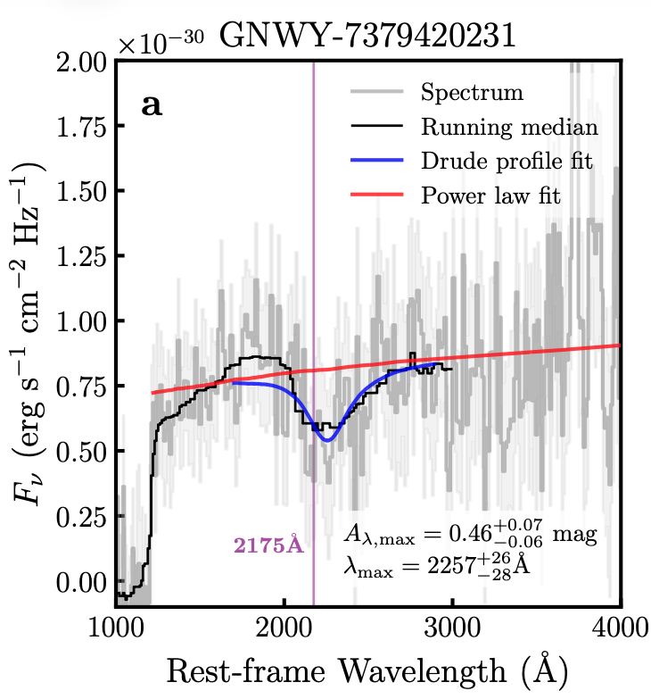

My Research

The 2175Å UV Bump at High Redshift
In this paper, we identified a bright galaxy at z=7.1, with a strong 2175Å UV bump
feature in its rest-UV spectrum, through observations taken as part of the NIRSpec
Wide GTO survey.
The presence of the UV bump feature at such early times indicates rapid evolution of
dust properties within the first billion years of cosmic time. To investigate the origin
of the dust responsible for the UV bump, we carried out resolved SED fitting, suggesting
that existing (large) dust grains are likely being rapidly reprocessed in the ISM,
producing the small carbonaceous grains responsible for the UV bump feature.
Find out more →
Successful Proposals
Constraining Dust Formation at Cosmic Dawn with Luminous UV Bump Galaxies
PI, JWST NIRSpec IFU
Observing time: 19 hours
The 2175Å UV bump as a signpost of NIRCam dark star formation
PI, NOEMA interferometer
Observing time: 25 hours
Unveiling dust build up in a 'UV bump' galaxy at z=7.1 with JWST+NOEMA
Co-PI, NOEMA interferometer
Observing time: 16 hours